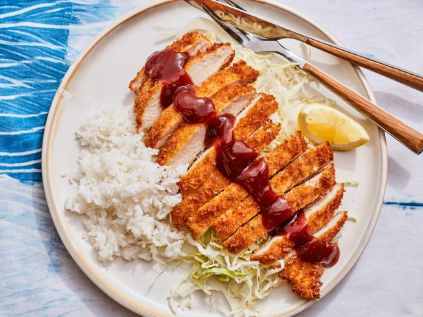

Chicken Katsu

Description
Chicken Katsu is a popular Japanese dish that consists of breaded and deep-fried chicken cutlets. The chicken is typically coated in flour, beaten egg, and panko breadcrumbs before being fried until golden brown and crispy. The dish is often served with a side of steamed rice and shredded cabbage, along with a tangy katsu sauce for dipping. Chicken Katsu is a delicious and satisfying meal that’s perfect for those who love crispy fried chicken with a Japanese twist.
Ingredients
- Chicken:You'll need four skinless, boneless chicken breast halves.
- Seasonings:This chicken katsu recipe is simply seasoned with salt and pepper.
- Flour:All-purpose flour helps seal in the moisture, adds flavor, and promotes browning.
- Egg:An egg adds moisture and gives the Panko something to stick to.
- Panko:Panko bread crumbs are responsible for katsu's signature crunch.
- Oil:Opt for a neutral oil with a high smoke point, such as canola or vegetable oil.
Steps
- Season the chicken, then dredge in flour.
- Coat each breast in egg, then press into the Panko.
- Fry the chicken katsu until golden brown.